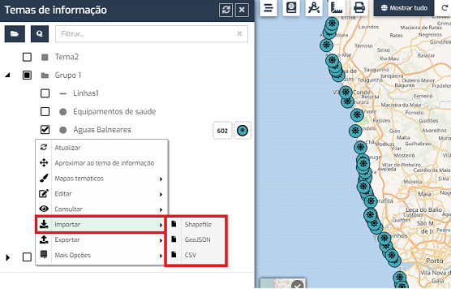

FAQs
A aplicação permite a importação de informação de ficheiros Shapefile, GeoJSON e CSV. Os dois primeiros permitem a adição ou substituição de elementos, enquanto o CSV permite a atualização da informação alfanumérica dos elementos existentes. As opções estão disponíveis na figura seguinte.

A importação de shapefiles é efetuada através da opção "Importar > Shapefile".
É necessário selecionar a shapefile (passo 1 – ficheiros com extensões SHP, DBF, SHX e PRJ), selecionar o sistema de referência da shapefile (passo 2), mapear os campos da shapefile com os da base de dados (passo 3) e, finalmente, selecionar a operação a realizar, de entre as seguintes (passo 4):
A importação de GeoJSONs é efetuada através da opção "Importar > GeoJSON".
É necessário selecionar o GeoJSON (passo 1), selecionar o sistema de referência do ficheiro (passo 2), mapear os campos do GeoJSON com os da base de dados (passo 3) e, finalmente, selecionar a operação a realizar, de entre as seguintes (passo 4):
Os detalhes dos elementos de um tema podem ser atualizados por importação de ficheiros CSV, através da opção “Importar > CSV”.
É necessário selecionar o CSV (passo 1) e mapear os campos do ficheiro com os da base de dados (passo 2). É necessário indicar qual o campo chave para identificação dos elementos, através da seleção da caixa de verificação existente no lado direito dos campos.
Este documento foi gerado pelo HelpMaker Light — Copyright © Hypervisual 2008-2017.